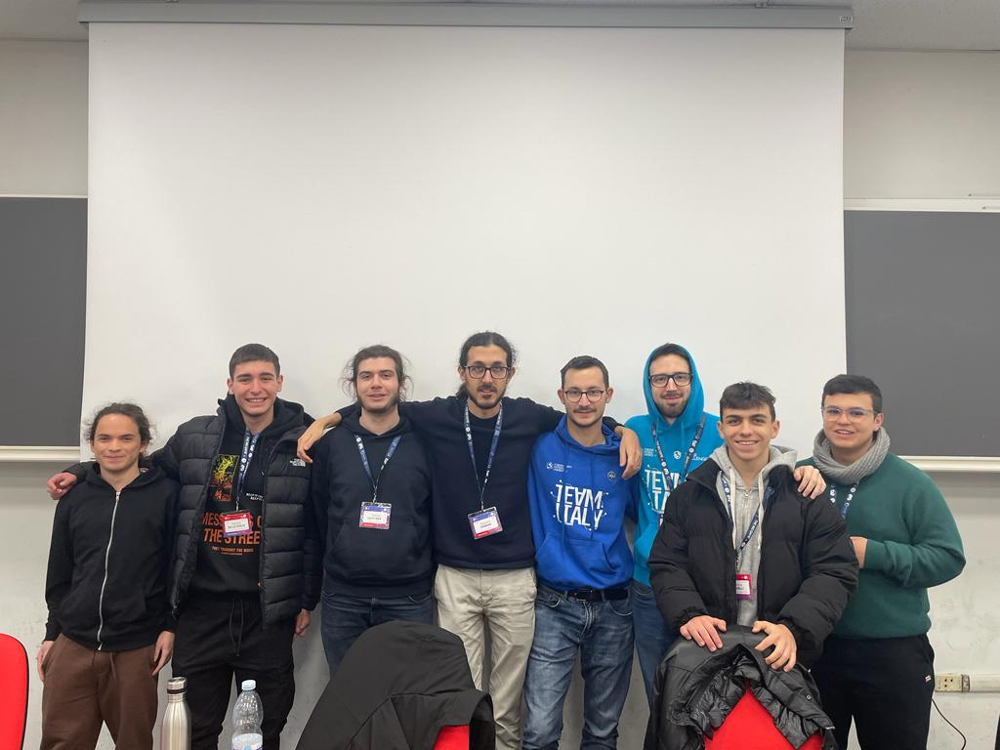
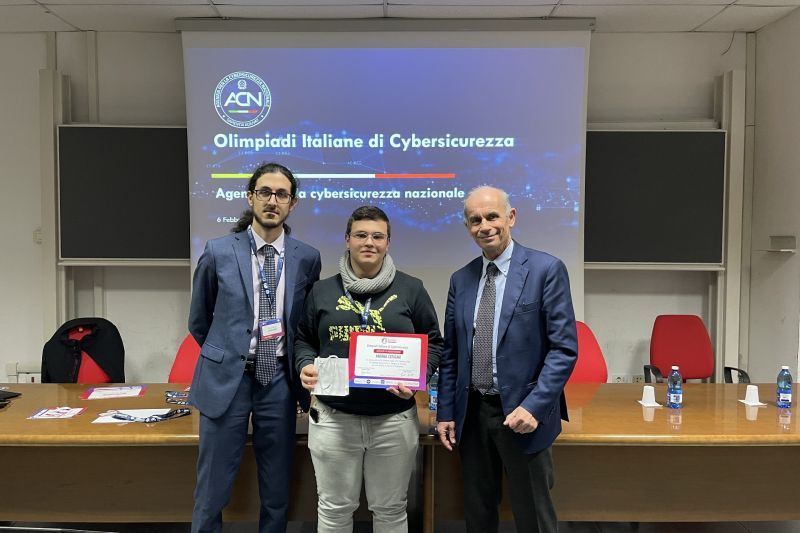
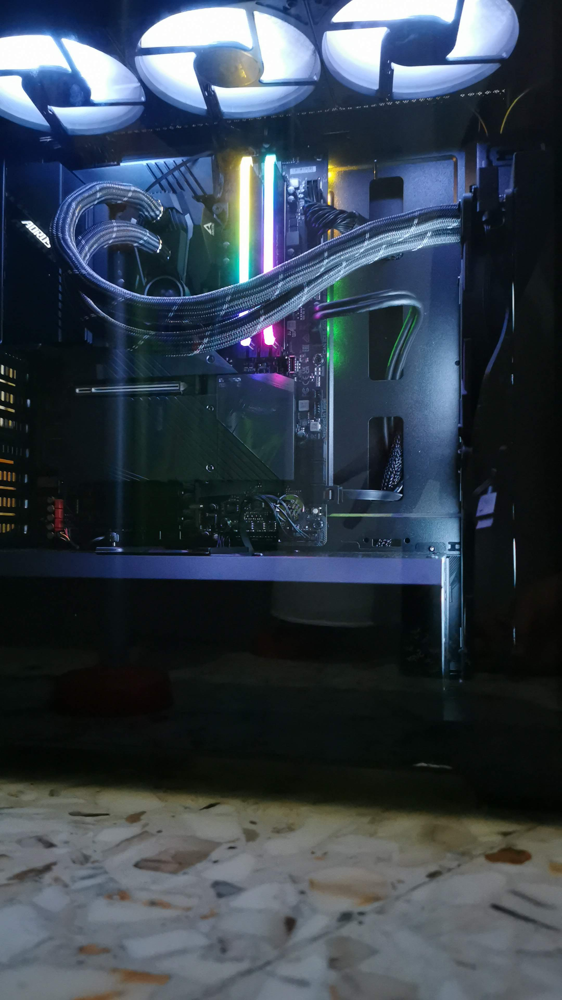

Portfolio
Check Out Some of My Works.




As an enthusiast of computer science and cybersecurity, I actively participate in competitions such as Olicyber, where I proudly represent my school (ITT Gulielmo Marconi Bari). I have honed my skills through various experiences, including attending an intensive one-week cybersecurity course organized by Olicyber, and competing in the Reply Cyber Security Challenges with my classmates, where we finished in the 250th position. My passion for computer science fuels my desire to pursue future projects in this field.
Passionate about programming since the age of 14, I have competed in national and international competitions. My goal is to become a cybersecurity specialist and continue to cultivate my passion through projects and collaborations.
I am proficient in Python and Java for creating complex applications, solving algorithmic problems, and optimizing code. I also have experience with JavaScript and Git, and feel comfortable using the terminal/CLI on both Linux and Windows.
July 2017 - Present
I was a warehouseman for my uncle and grandfather from 2017 until today, in 2023. During these years I have learned a lot about warehouse management activities and logistics.
July 2017 - September 2021
I worked as a vending machine recharger for my father from 2017 until 2021. During these years I learned to manage stocks and monitor sales to ensure that distributors were always restocked.
September 2019 - Present
Computer science is my passion because it allows me to explore and create new technologies that can improve people’s lives. I’m always excited to learn more about this ever-changing field.
One week at the University of Salerno with Olicyber
20 - 25 February
Olicyber is a company specialized in consulting and training in the field of cybersecurity. My week of cybersecurity training with Olicyber at the University of Salerno was intense and exciting. With the guidance of expert trainers, I gained a deep understanding of the field and feel ready to tackle any challenge in my career in cybersecurity.